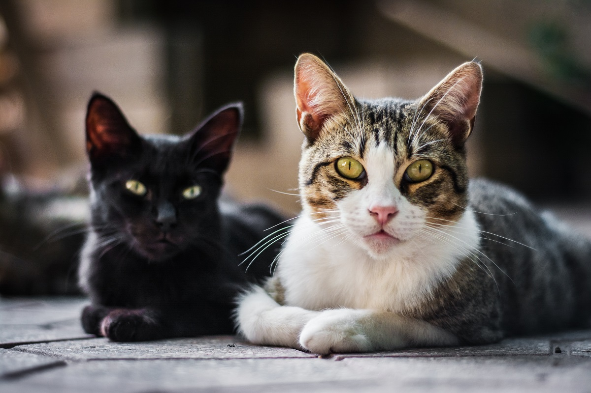
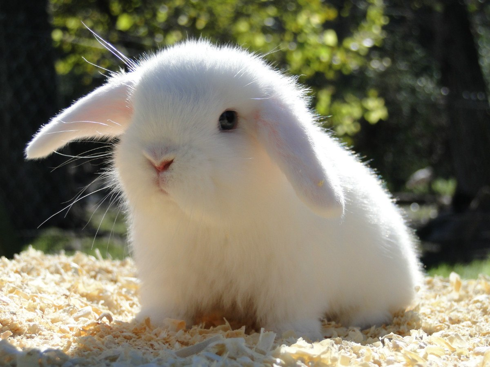
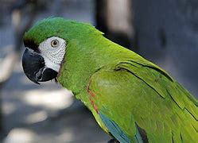
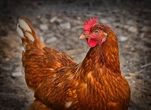

Alimentación
- Elige alimento balanceado según etapa y tamaño; evita cambios bruscos.
- 2 tomas/día en adultos; premios máximos 10% de calorías diarias.
- Agua fresca disponible todo el día.
Ambiente
- Cama en zona tranquila; enriquecimiento con juguetes tipo rompecabezas.
- Rutina de paseos diarios acorde a energía y clima.
Salud preventiva
- Vacunas y desparasitación según plan veterinario.
- Control antipulgas/antigarrapatas mensual.
Conducta
- Refuerzo positivo; reglas claras desde el primer día.
- Socialización gradual con perros y personas.
Seguridad
- Placa/microchip; basura y objetos pequeños fuera de alcance.
- Evita huesos cocidos, chocolate, uvas y cebolla.

Alimentación
- Húmedo + seco equilibrado; vigila el peso y la hidratación.
- Evita leche de vaca; ofrece fuente de agua para incentivar consumo.
Ambiente
- Rascadores verticales y horizontales; zonas altas y escondites.
- Bandeja sanitaria: 1 por gato + 1, arena limpia diariamente.
Salud preventiva
- Vacunas base (según normativa) y desparasitación regular.
- Cepillado para controlar bolas de pelo.
Conducta
- Juego diario con cañas/pelotas; enriquecimiento rotando juguetes.
- Adaptación por etapas al llegar a casa.
Seguridad
- Mosquiteros en ventanas; plantas no tóxicas; productos químicos guardados.

Alimentación
- Heno a libre disposición; verduras seguras; pellets medidos.
- Evita azúcares y cambios bruscos para prevenir problemas digestivos.
Ambiente
- Recinto amplio con suelo antideslizante; escondites y túneles.
- Tiempo de exploración diaria supervisada.
Salud preventiva
- Chequeos dentales; vacunas según región; control de parásitos.
Conducta
- Manejo suave; habituación gradual al contacto.
Seguridad
- Proteger cables; evitar calor extremo; superficies seguras para saltar.

Alimentación
- Base de pellets + variedad de frutas y verduras seguras.
- Evita aguacate, chocolate, cafeína y alcohol.
Ambiente
- Jaula amplia; perchas de distintos grosores; juguetes rotativos.
Salud preventiva
- Chequeos periódicos; higiene de jaula; UVB si corresponde.
Conducta
- Interacción diaria; prevención de estrés por ruido/cambios.
Seguridad
- Evitar corrientes de aire y humo; supervisión fuera de la jaula.

Alimentación
- Balanceado + granos y verduras; calcio extra si están en puesta.
Ambiente
- Gallinero seco y ventilado; perchas y nidos limpios.
Salud preventiva
- Desparasitación programada; revisión de plumas, pico y patas.
Conducta
- Enriquecimiento con forrajeo; evitar hacinamiento.
Seguridad
- Protección frente a depredadores y clima extremo.

Checklist de esenciales
- Alimento adecuado a especie y edad
- Platos de comida y agua
- Cama o refugio cómodo
- Juguetes y enriquecimiento
- Higiene: arenero/palestras/bolsas/peine según mascota
- Identificación (placa/microchip)
- Cita veterinaria inicial
Preguntas frecuentes
¿Cómo cambio de alimento sin problemas?
Haz una transición gradual durante 5–7 días, observando tolerancia digestiva.
¿Cuánto dar de comer?
Revisa la etiqueta por peso/edad y ajusta según actividad y condición corporal.
¿Cuándo vacunar y desparasitar?
Programa la primera cita en la primera semana para un plan personalizado.